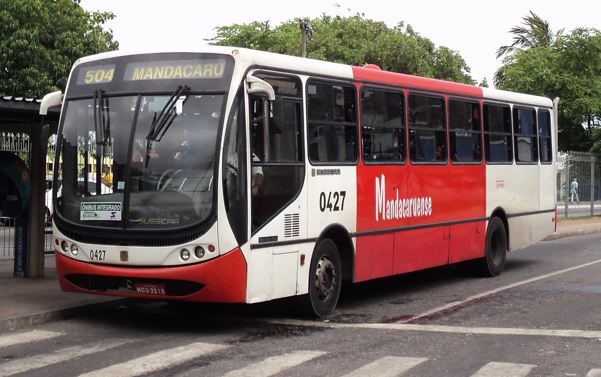
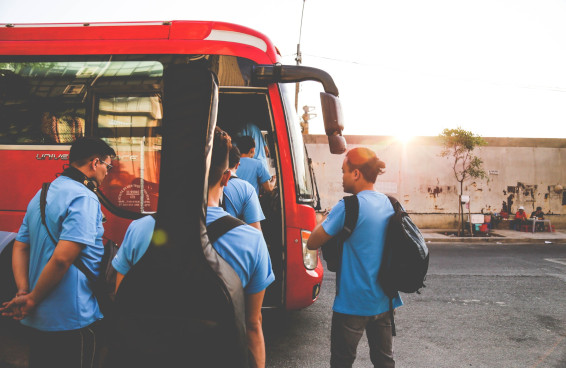
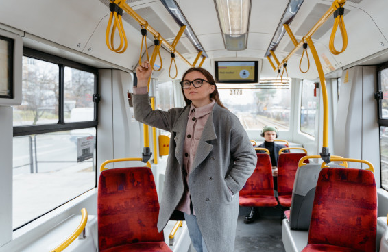
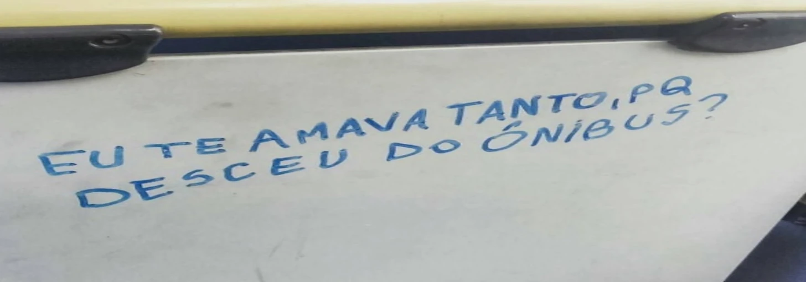

 Quem é você no ponto de ônibus? Sim, depois de fazer esse quiz, vamos descobrir como você se comporta Thiago Cordeiro há 2 horas
 Você é motorista, cobrador ou passageiro? Vamos adivinhar a partir das suas respostas neste teste maravilhoso Thiago Cordeiro há uma hora
 Para quem você oferece seu lugar às 6 horas da manhã? Responda ao quiz e diremos se você é uma boa ou má pessoa de manhã cedinho Thiago Cordeiro há 2 horas
Quais dessas coisas você já fez no ônibus? Marque cada coisa que você já fez dentro de um bus. Não vale mentir, hein! Thiago Cordeiro há 3 horas
Você não vai acreditar o que as pessoas encontraram Algumas pessoas nos contaram o que já encontraram de mais esquisito Thiago Cordeiro há 5 horas
Nossas redes sociais Curta a gente no Facebook Siga-nos no Twitter Inscreva-se no Youtube Siga-nos no Instagram
Bombando no BusFeed 1 Todo mundo é uma combinação de dois passageiros Thiago Cordeiro - há 3 dias 2 Descubra quem é você em "O Sequestro do Ônibus 657"? Thiago Cordeiro - há 4 dias 3 Que fofoqueiro no ônibus é você? Thiago Cordeiro - há 5 dias  4 As 20 melhores frases achadas nos ônibus Thiago Cordeiro - há 3 dias